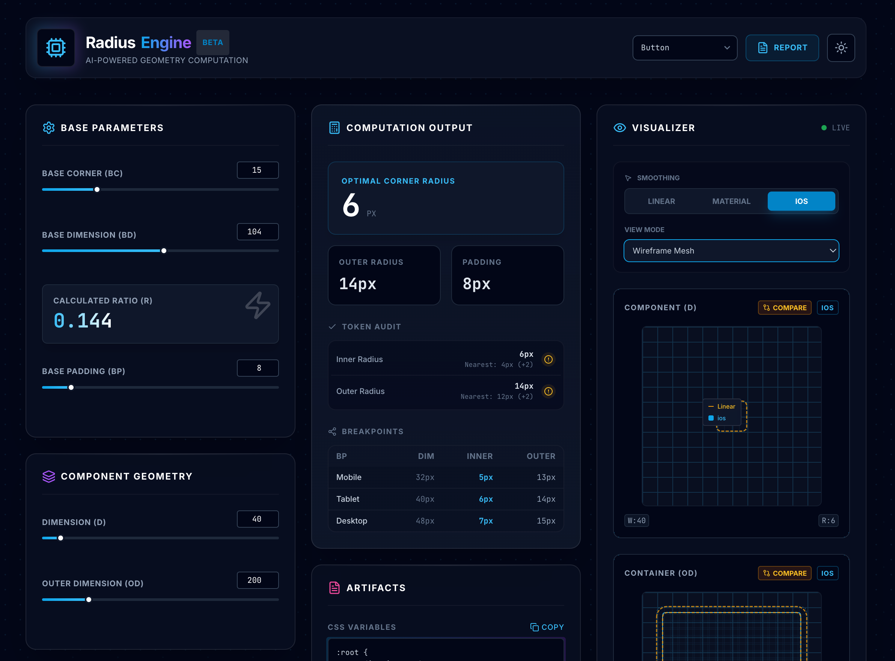
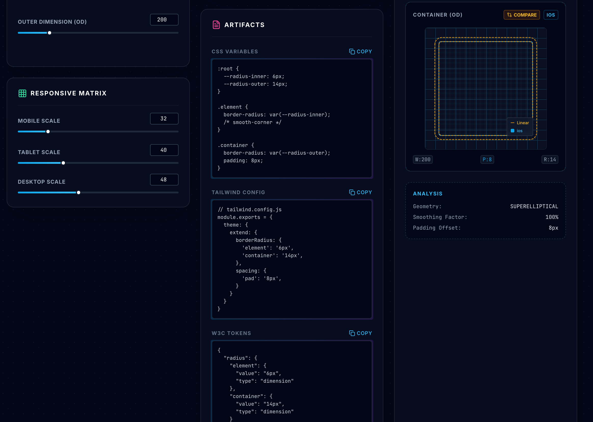
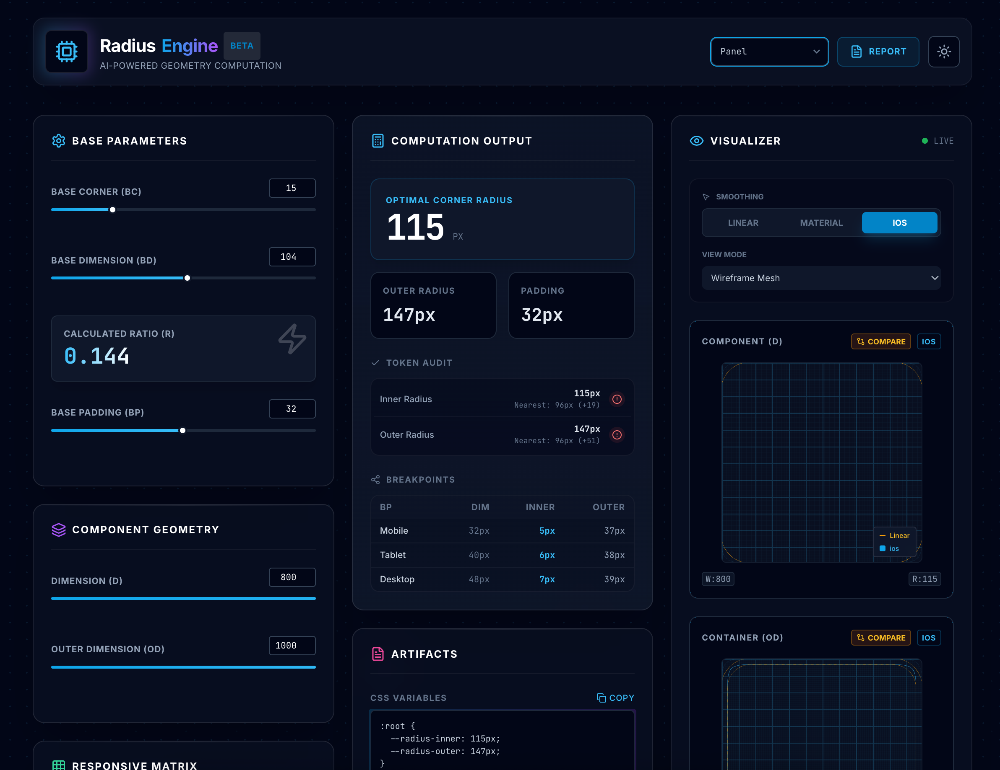

Back to selected work
AI Product | Design System Geometry
Radius Engine
An AI-powered geometry utility that helps designers and engineers calculate, validate, visualize, and export corner-radius systems for scalable design systems.
Base Ratio
R = BC / BD
12px / 48px = 0.25
Token Match
12px
Closest token: radius-lg
Case Study Highlights
Turning corner radius from visual preference into governed system logic.
Product thinking
Reframed radius as a governance, validation, and design-token problem rather than a simple calculator.
System model
Introduced ratio-based geometry to create consistent relationships across components and containers.
AI workflow
Used AI-assisted development to prototype calculations, guidance, audits, exports, and style-guide generation.
Design-to-code
Generated CSS variables, Tailwind config, W3C design tokens, SVG paths, and documentation outputs.
Overview
AI-powered geometry computation for design systems.
Radius Engine helps teams calculate, validate, visualize, and export radius values across components, containers, and responsive breakpoints.
The product was created to solve a common design system issue: teams use arbitrary values such as 4px, 8px, 12px, and 16px without a clear mathematical relationship between UI levels.
Product Positioning
Not just a calculator.
Radius Engine acts as a radius governance system, design token generator, responsive geometry engine, and validation tool for scalable product ecosystems.
Problem
Arbitrary radius scales create invisible design debt.
Radius values often start as small visual choices, but they become system-level debt as products scale. Different designers choose different values, engineers duplicate tokens, and nested components lose visual consistency.
Without governance, radius scales become difficult to maintain across products, responsive breakpoints, component variants, and implementation platforms.
Design, Engineering, System Problems
The same issue appears differently across teams.
Visual inconsistency
Different designers use different radius scales with no relationship between nested UI elements.
Implementation drift
Duplicate radius tokens and one-off values make codebases harder to maintain.
Token sprawl
Radius systems grow without governance, naming rules, or responsive scaling logic.
Scalability limits
Teams document radius decisions but lack tooling to maintain and validate them over time.
Goals
Create a geometry system designers and engineers can trust.
Calculate
Generate mathematically consistent radius values from base dimensions and ratios.
Visualize
Show radius relationships in real time so decisions are easier to evaluate.
Validate
Compare generated values against token scales and identify inconsistencies.
Export
Produce CSS variables, Tailwind config, W3C tokens, SVG paths, and style guides.
Research & Discovery
Studying how mature systems use radius as a quality signal.
References studied
Material Design, Apple Human Interface Guidelines, Fluent Design, Tailwind UI, enterprise SaaS products, and modern design systems.
Key finding
Mature design systems rarely use random radius values. Radius directly affects perceived product quality and coherence.
Opportunity
Most teams document radius but lack tooling for automation, governance, responsive scaling, and implementation handoff.
Solution
A ratio-based geometry model for scalable radius systems.
Base Corner Radius
12px
BC
÷
Base Dimension
48px
BD
=
Radius Ratio
0.25
System rule

Base configuration
The initial setup turns base radius, dimension, and padding values into reusable geometry rules.
Feature Breakdown
From base configuration to governed implementation.
Base Configuration
Inputs include base corner radius, base dimension, and base padding. Outputs include ratio, geometry rules, and radius recommendations.
Component Geometry Calculator
Users enter component dimension and outer dimension to calculate inner radius, outer radius, and padding recommendations.
Radius Engine
The core engine calculates optimal corner radius, inner radius, outer radius, and geometry relationships automatically.
Live Visual Preview
Real-time geometry rendering gives designers immediate feedback and faster iteration loops.
Radius Analysis
The system provides geometry classification, consistency checks, padding offset analysis, and relationship guidance.
Component Presets
Presets for buttons, inputs, chips, cards, modals, and panels auto-fill dimensions and recommend radius values.

Component geometry calculator
The calculator visualizes inner radius, outer radius, padding, and component dimensions in one decision-making workspace.
Radius Engine Formula
Simple enough to understand, structured enough to scale.
The base formula creates a reusable ratio. That ratio becomes the foundation for calculating future component, container, and breakpoint values.
R = BC / BD
BC = Base Corner Radius
BD = Base Dimension
Example:
12px / 48px = 0.25Responsive Radius Matrix
One ratio applied across breakpoints.
| Breakpoint | Dimension | Inner | Outer |
|---|---|---|---|
| Mobile | 32px | 8px | 24px |
| Tablet | 40px | 10px | 26px |
| Desktop | 48px | 12px | 28px |
| Large Desktop | 64px | 16px | 32px |
Token Audit
Calculated values are checked against design-system tokens.
Radius Engine compares generated values against token scales, suggests the nearest token, shows the difference, and highlights inconsistencies.
Generated Radius10px
Nearest Token8px
Difference+2px
Recommendation: use `radius-md` or add a governed 10px token if the pattern repeats.
Advanced Geometry
Supporting visual inspection and platform-specific corner behavior.
Corner Smoothing Engine
Compare Linear Radius, Material Smoothing, and iOS Continuous Corner behavior.
Visualization Modes
Inspect radius with Standard, Wireframe, Border Outline, Radius Heatmap, and Dark Mode Preview.
Consistency Audit Pro
Upload SVG or Figma geometry to detect radius usage, find violations, and suggest corrections.
Export System
Bridge design decisions directly into implementation.
CSS Variables
:root {
--radius-inner: 10px;
--radius-outer: 26px;
}Tailwind Config
borderRadius: {
element: '10px',
container: '26px'
}W3C Design Tokens
{
"radius": {
"element": 10,
"container": 26
}
}
Export center
Generated radius decisions can be exported into implementation-ready formats for engineering and design-system documentation.
Style Guide Generator
Documentation becomes part of the output, not an afterthought.
Radius Engine automatically generates radius token tables, usage guidelines, responsive tables, component examples, and smoothing comparisons.
Documentation can be exported as Markdown or HTML so teams can add radius governance directly into their design system documentation.
UX Decisions
Designing for clarity, control, and cross-functional adoption.
Use ratios, not fixed scales
Ratio-based calculations create a more scalable and maintainable system than isolated fixed values.
Make every calculation visual
Visual previews reduce cognitive load and help designers evaluate geometry relationships faster.
Bridge design and development
Direct token generation and implementation exports reduce translation work between disciplines.
Product Thinking
A geometry platform for design-system governance.
Radius Engine started as a utility, but the product opportunity was broader: help teams establish scalable corner-radius standards across multiple products, platforms, and implementation contexts.
Impact
Helping teams scale visual quality through automation.
Skills demonstrated
- Product strategy and UX decision-making.
- Design-system token architecture.
- AI-assisted product prototyping.
- Frontend understanding with React, Tailwind, CSS variables, and tokens.
Team value
- Improve design consistency.
- Accelerate design-system adoption.
- Improve designer-developer collaboration.
- Generate production-ready outputs.
Reflection
Small design decisions become system problems when products scale.
Radius Engine started as a simple corner-radius calculator but evolved into a complete geometry platform for design systems.
The project demonstrates how AI, automation, and mathematical models can help teams create more scalable and maintainable design systems while preserving designer control and implementation clarity.
Contact
Let’s build products that are simple to use and hard to outgrow.
Location: Di An Ward, Ho Chi Minh City. Open to Senior Product Design, UX Design, and design system opportunities.